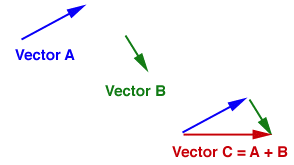
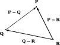

Assignment 7: Vectors and Points
Creating Vector and Point class
In Part I, you will define a Java class that models a mathematical vector. Part II involves writing methods that implement a point.
You are encouraged to work on Parts I and II using test-driven development.
Test-driven development means that the code you write is governed by the tests your code has to pass. For this lab, you are provided a
VectorAndPointTestJUnit test case. You will use the test methods in that file to drive your implementation ofVector.You will follow this same methodology as you develop your
Pointclass.
Part I. Implementing a Vector class:
A vector is a mathematical description of a direction and a magnitude (using a polar-coordinate representation). Another way to think about a vector is a location relative to some point of origin. In other words, a vector is a displacement horizontally and vertically from some point of origin.
If you think about them this way, you can see how vectors can be added, as shown below.

- Open the file
VectorAndPointTest.javaand take a look at the JUnit tests that appear in the file.-
You are to proceed with the development of your
Vectorclass by considering these tests one at a time. For example, theinit()test will require you to write the constructor forVector.-
You will have red flags because
Vectoris not yet complete, but you can run the JUnit test nonetheless. If you expand thelab7.VectorAndPointTestin the JUnit window, you can see which tests are passing or not. Clicking on a given test shows you the detail below in the Failure Trace window. -
A green checkmark indicates success; a dark X indicates failure; a red X indicates compilation problems not yet addressed.
-
-
After that, the
arith()test would have you implementVector’splusandminusmethods. -
As you follow the instructions below, develop and then test each method one at a time! Read through the instructions before and during your develpment to guide your writing of the
Vectorclass.
-
-
Open
Vectorin the providedlab7package. A class namedVectorhas been defined in the file, but so far it contains no instance variables or methods. (Notice that the class name exactly matches the file name, including capitalization. Java requires this.) -
Instance variables: The instance variables of a class define what kind of information each object of that class will hold. If we think of a vector as a translation in two-dimensional space, then we can represent a vector as the change in x and the change in y. In other words, we want each Vector object to contain two distances, deltaX and deltaY.
To accomplish this, declare two instance variables in the Vector class, and name them deltaX and deltaY. Both should be of type
double.Naming conventions:
By convention, names of instance variables and methods should begin with lower case letters, to distinguish them from class names, which begin with upper case letters. If a variable has multi-word name, we usually capitalize subsequent words. For example,
thisIsAVeryLongVariableName.Encapsulation:
Objects usually contain data, and it is good design practice to make sure that this data can’t be “messed with” by other classes. Other classes should call methods on the object to access the information. That way, each class can control what is seen and, more importantly, how it is modified.
Make both of the instance variables in your Vector class private by typing the keyword
privateat the beginning of the declaration, before the type of variable.When you make the variables private, Java will make sure that the only way that code in other classes can see or modify their values is by calling methods of the Vector class.
-
Initialization:
Assigning to a variable for the first time is called “initializing” the variable. Constructurs usually have the job of initializing instance variables. When we create Vector objects, we will probably want to supply the deltaX and deltaY values for them. So, define a public constructor that takes two double parameters and assigns their values to deltaX and deltaY. Recall that a constructor always has the same name as the class.
Tip: You can type the constructor yourself if you want, but Eclipse provides some tools for generating these kinds of constructors automatically. To create the constructor automatically, first position your text cursor on the class name at the beginning of the file. Then open the Source menu and select “Generate constructor using fields.” Finally, select the boxes for deltaX and deltaY so that the constructor will have parameters that are used to initialize those instance variables.
Name masking: A method or constructor may have a parameter whose name is the same as the name of an instance variable. For example, you might have a parameter and instance variable both with the name “deltaX.” When a name is used in a program, it refers to the “closest” declaration. So any use of the name “deltaX” would refer to the parameter. In this case, we say that the parameter masks the instance variable. But inside the method or constructor, we may still want to use or change the value of the instance variable. Within a method, the keyword
thisalways refers to the object on which the method has been invoked (i.e., “this” object). When an instance variable is masked, you can still refer to it by preceding its name with “this.” For example, inside the method,this.deltaX = deltaXwill assign the value of the parameter deltaX to the instance variable named deltaX inside “this” object.Implicit targets: Normally, when you call a method on a target object, you identify the target, and then identify the method and its actual parameters. For example,
alice.deposit(50)calls the deposit method on the object to which
alicerefers. In other words,aliceis the target. If you don’t identify a target, then it is assumed that the target is the same object that is currently executing a method. For example, if we call the deposit method onaliceand inside of the deposit method there is an expressiongetBalance(), then it is understood that the method will be called on alice since that is the object in which the deposit method is executing. In such cases, it is not necessary (and considered bad style) to use the word “this” because it is already understood that this object is the target. -
The toString method:
It is customary to provide a method called
toStringthat takes no parameters and returns aStringvalue that is a textual description of the object. You can call this method yourself, but Java will also call it whenever it needs to concatenate the object onto a String. Define atoStringmethod for the Vector class that returns a textual description of the vector. For example,(new Vector(4,3)).toString()might have the value"[4 3]"as its return value. (Hint: Form this string by concatenating various characters with the deltaX and deltaY values.) -
Accessors:
Most classes provide accessor methods that other parts of a program can call to get information from an object. For the Vector class, define two accessor methods named
getDeltaXandgetDeltaYthat take no parameters and return the values of the instance variables deltaX and deltaY, respectively. Note: Here, the instance variables will not be masked by matching parameter names (in fact, there are no parameters at all), so there is no need to use “this.” You can refer to the instance variables by their names alone.Tip: You can type the methods yourself, or you can open the Eclipse Source menu and select “Generate Getters and Setters.” Check the boxes for “getDeltaX” and “getDeltaY.” Study the methods after creating them.
At this point, your
VectorAndPointTestJUnit test should pass itsinit()test. -
Accessors that compute their return value: Sometimes accessors provide information that is not directly stored inside the object, but is instead computed when the method is called. For example, write a method called
magnitudethat takes no parameters and returns adouble, the length of the vector. Use the pythagorean theorem to compute the length of the vector. Recall that the methodMath.sqrt(x)returns the square root of x. -
Mutators and immutable objects: Often, a class will provide mutator methods, such as
setDeltaX, that allow controlled modification of the data stored in the corresponding instance variables. However, we will not provide mutators for the Vector class. Instead, each of our Vector objects will be immutable, meaning that once it is created, its value will never change. So, whenever we want a Vector with a different direction or magnitude, we will have to create a new object.Since Vector objects will be immutable, the rest of these methods will create new vectors as their return values. They’ll do this by first computing the desired deltaX and deltaY values, and then using the Java keyword
newto call the constructor you wrote earlier. You can define local variables inside the methods whenever it’s convenient, but remember that the final result of each method will be a new vector. Don’t modify the object on which the method was called.Note: You may want to add the word final to the declaration of your instance variables. This indicates that the instance variable’s value should be established by the constructor and not be changed by any other method. Adding final will prevent you from accidentally changing the value in the methods you write for the
Vectorclass. -
Define a method called
deflectXthat takes no parameters and returns a new vector that is identical to “this” one, except that its deltaX component has the opposite sign. For example, if this vector is [-3 4], then the new vector would be [3 4]. In other words, the method creates a vector oriented in the opposite x direction. -
Define a method called
deflectYthat takes no parameters and returns a new vector that is identical to “this” one, except that its deltaY component has the opposite sign. -
Define a method called
plusthat takes another vector as its parameter and returns a new vector that is the sum of this vector and the one provided as input. Recall that to add two vectors, you add their x-coordinates and their y-coordinates. For example, suppose you have a vector with value [3 4] and you call theplusmethod on it, passing in a vector with value [-5 2]. Then the vector returned by the method should have the value [-2 6].Hint: The parameter type and return type of this method are both Vector. When you create the new vector to be returned, you will need to supply parameter values. To compute those parameter values, you can use both “this” vector (the one on which the method was called) and the vector that was passed in as a parameter.
-
Define a method called
minusthat takes another vector as its parameter and returns a new vector that is the difference of this vector minus the one provided as input.Challenge: Write
minusin terms of methods you have already defined for theVectorclass. Which computer science principle are you applying by doing that?At this point, your
VectorAndPointTestJUnit test should also pass itsarith()test. -
Define a method called
scaletakes adoublenamedfactoras its parameter. When you call this method on a vector, it should return a new vector whose direction is the same, but whose magnitude has been multiplied by the given parameter.Recall: Scaling a vector by some
factorcan be accomplished by scaling itsdeltaXanddeltaYcomponents by that same factor. Be sure to return a new vector, and don’t change the one on which this method was called.At this point, your
VectorAndPointTestJUnit test should also pass thetestScaleAndDeflect()test. -
Define a method called
rescaletakes a double namedmagnitudeas its parameter. When you call this method on a vector, it should return a new vector whose direction is the same, but whose magnitude is the one supplied as the parameter.Hint: First call the
magnitudemethod to find this vector’s magnitude and save it in a local variable. Use this to compute a scale factor, and then let thescalemethod do the rest of the work.NOTE: If the target of the rescale method has a zero magnitude, no particular direction is defined for the resulting vector. One could consider this an error condition, but for the purposes of this assignment, if the original magnitude is zero, let the resulting vector have deltaX equal to the given magnitude, and deltaY equal zero.
At this point, make sure your code passes all the VectorAndPointTest cases
provided with this lab. Do NOT change the test code (we are watching and will know if
the revision changes on that file).
Part II: A Point Class
Note: You are encouraged to develop
Pointas you didVector, using test-driven development.
-
In the Package Explorer, select the
lab7package and use the File menu to create a new class namedPointin that package. In the Point.java file that is created, write an implementation according to the specificaion described in the following steps, testing as you go. -
Instance variables: Since a point is just an (x,y) pair, declare two instance variables (of type
double) to hold the x and y coordinates of the point. These variables should be private to prevent changes from outside. The constructor and all methods in this class should be public. -
Constructor: Write a constructor that takes
xandyas parameters, and initializes the new Point object with the values that are passed in. -
Accessors: Create getX and getY methods that return the coordinate values.
-
toString: Write a toString method that returns a String representation of the point. For example, if x is 3 and y is -2, you might return the String “
(3.0, -2.0)”. -
Adding a Vector to a Point: It doesn’t make sense to add two points together, but it does make sense to add a vector to a point. The result is a new point that differs from the old point by the deltaX and deltaY of the vector. For example, if we have the point (3,-2) and we add the vector [4 1], we will get the point (7,-1). Write a
plusmethod of the Point class that takes a Vector as a paramter and creates a new point that results from adding this point to the given vector. -
Subtracting Points: When you subtract one point from another, you get a Vector, as shown in the figure below. As an example, suppose point P is (4,2) and suppose that point Q is (1,6), then P-Q would be the vector [3 -4]. (To see why this makes sense, consider what point you would get by adding the vector to Q.)

Write a
minusmethod of the Point class that takes another Point as its parameter and returns the appropriate vector. -
Distance to another point: Write a method named
distancethat takes another point as a parameter and returns the distance between this point and the given point.Try to implement this by reducing this problem to calls of methods you have already written.
-
Make sure your code passes the unit tests.